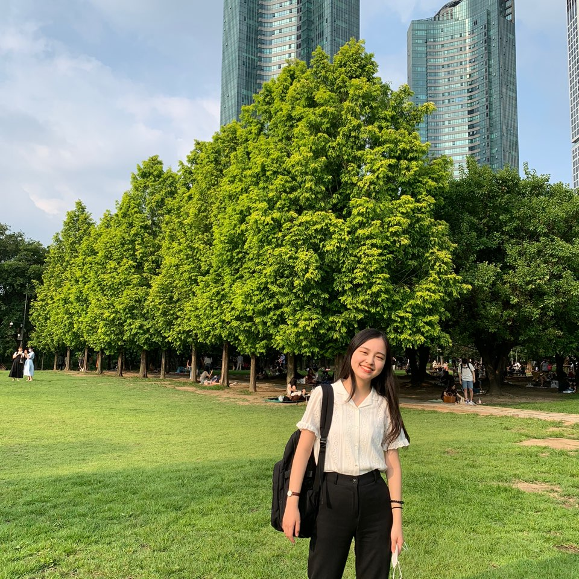
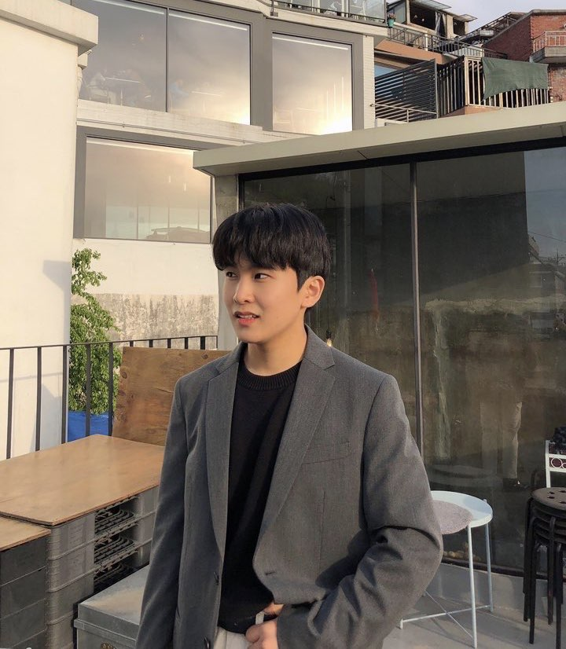

🗣 “AIESEC은 청년과 열정이라는 자격요건만으로 진입장벽 없는 NGO 및 기업 경험을 할 수 있는 기회의 장이자, 적극적인만큼 얻어가는 것이 많아지는 단체입니다. 뜻 깊은 대학생활을 원한다면, 고민없이 함께 해주세요! ”
🌍 TM / oGX LCVP_전효림(문헌정보학과 19학번)
AIESEC에서의 여정. 1920.Term: TM Member 2021.1Term: MKT/ oGX LCVP 2021.2Term: TM/ oGX LCVP🗣 “ 가벼운 마음으로 지원한 AIESEC은 지금 저의 학교 생활에 엄청난 부분을 차지하는 활동입니다. 여러분도 저처럼 AIESEC에 지원하셔서 많은 경험을 얻으실 수 있으면 좋겠습니다! ”
🌍 F & L LCVP_강은비(심리학과 19학번)
AIESEC에서의 여정. 1920.2Term: oGX Member 2021Term: F &L LCVP🗣 “좋은 사람이 되는 것은 좋은 사람들과 좋은 경험을 나누며 성장하는 것에서 비롯된다. AIESEC에서 그 가치를 실현시키는 리더가 되어봅시다 :) ”
🌍 MKT LCVP / oGX TL_윤준형(문헌정보학과 19학번)
AIESEC에서의 여정. 1920.Term: TM Member 2021.2Term: MKT LCVP / oGX TL🗣 “ 지난 1년 AIESEC 활동을 하며 정말 좋은 사람들과 좋은 추억을 쌓을 수 있었습니다. 여러분도 함께 AIESECer로 활동하며 좋은 추억 만들어 가셨으면 좋겠습니다! ”
*TL은 Team Leader의 약자입니다. 이번 2020년도 2학기에는 oGX(해외교류중개부서)의 FM(부서 회의)은 oGX TL이신 윤준형씨에 의해 진행, 관리될 예정입니다.
➊ GV(Global Volunteer, 해외 봉사 프로그램):

GV는 최소 6주에서 최대 8주 동안 다양한 국적의 자원 봉사자들과 함께 봉사 프로젝트에 참여하는 프로그램입니다. 해외에서 봉사활동에 참여하며 UN이 지정한 지속가능한개발목표, SDGs(Sustainable Development Goals)를 이루는 데 기여할 수 있는 멋진 기회를 얻을 수 있습니다.
➋ GTa (Global Talent, 해외 일반 인턴십 프로그램):

GTa는 최소 6주에서 최대 78주 동안 해외에서 경영, 마케팅, 엔지니어링, IT산업, 재무관리 등 원하는 직무에서 인턴으로 활동할 수 있는 프로그램입니다. 본인의 분야에 대한 전문적인 커리어를 개발하는 동시에 리더십을 끌어올릴 수 있는 멋진 기회를 가질 수 있습니다.
➌ GTe(Global Teacher, 해외 교육 인턴십 프로그램):

GTe는 최소 9주에서 최대 78주동안 북미, 남미, 유럽, 아시아로 진출해 선생님으로 활동할 수 있는 프로그램입니다. 해외에서 선생님으로 활동하며 본인만의 커리어를 개발하는 동시에 리더십을 끌어올릴 수 있는 멋진 기회를 가질 수 있습니다.

AIESEC에서 진행하는 글로벌 프로그램들에 대해 더 자세히 알고 싶다면
◀ AIESEC의 상징인 Blueman(블루맨)을 눌러주세요!
➊ 지원방법:
1) QR코드
2) 페이스북 AIESEC SKKU
3) 인스타그램 aiesec_skku
1st Round: 2020년 08월 17일(월) 오전 9:00 – 08월 23일(일) 11:59:59
2nd Round 2020년 08월 24일(월) 오전 9:00 – 08월 29일(토) 11:59:59
(지원 구글 폼인 Application Form은 13일 동안, 두 차례에 걸쳐서 오픈될 예정입니다.)
2020년 08월 31일(월) – 09월 01일(화) (추후 조정될 수 있습니다.)
면접 시간과 장소는 1차 합격자(Application Form)에 한해, 추후에 개별 연락처로 공지드릴 예정입니다.
지부장_권민정(19학번 영어영문학과): 010-6231-3230
인재관리부서장_전효림(19학번 문헌정보학과): 010-6479-1512